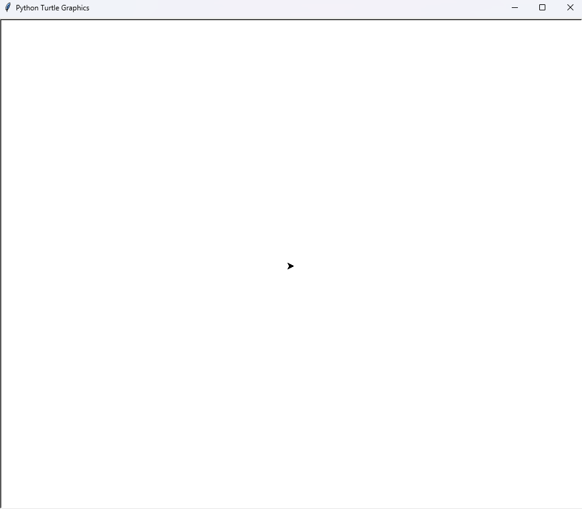

Żółw (turtle) - wprowadzenie
import turtle
x = turtle.Pen()
Zacznijmy od zaimportowania żółwia.
x = turtle.Pen() to będzie nasza "strzałka".
Poleceniami nazwa.czynność(wartość) będziemy "rysować" po planszy.

Podstawowe polecenia
Przykład:
x.forward(100) # przesunie żółwia o 100 pikseli do przodu
x.left(90) # obróci go o 90 stopni w lewo (z jego punktu widzenia)
# można też użyć x.right(270) zamiast left(90)
Rysowanie kwadratu o boku 100 (bez pętli):
import turtle
x = turtle.Pen()
x.forward(100)
x.left(90)
x.forward(100)
x.left(90)
x.forward(100)
x.left(90)
x.forward(100)
x.left(90)
Rysowanie kwadratu o boku 100 (z pętlą):
import turtle
x = turtle.Pen()
for i in range(4):
x.forward(100)
x.left(90)
For i in range(4): wykona instrukcję 4 razy, tyle ile kwadrat ma boków.
Dodatkowe polecenia i funkcje
.reset() # resetuje planszę i żółwia
.clear() # czyści samą planszę
.backward(wartość) # cofa żółwia o podaną wartość
.up() # podnosi "ołówek" (przestaje rysować)
.down() # opuszcza "ołówek" (zaczyna rysować)
.circle(r) # rysuje okrąg o promieniu r
Używaj pętli i prostych funkcji transformacji (forward, left, right) do tworzenia złożonych wzorów. Eksperymentuj z kolorami, grubością linii i prędkością żółwia.
Przykładowy prosty skrypt
import turtle
turtle.forward(200)
turtle.left(90)
turtle.forward(200)
turtle.left(90)
turtle.forward(200)
turtle.left(90)
turtle.forward(200)
turtle.mainloop()